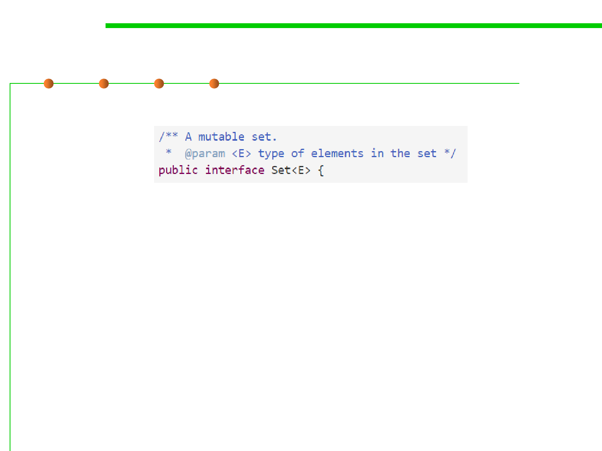

Another example: Java Set
3.4 Object-Oriented Programming (OOP)
▪ Set is the ADT of finite sets of elements of some other type E .
▪ Set is an example of a generic type : a type whose specification is
in terms of a placeholder type to be filled in later.
▪ Instead of writing separate specifications and implementations for
Set<String> , Set<Integer> , and so on, we design and
implement one Set<E> .